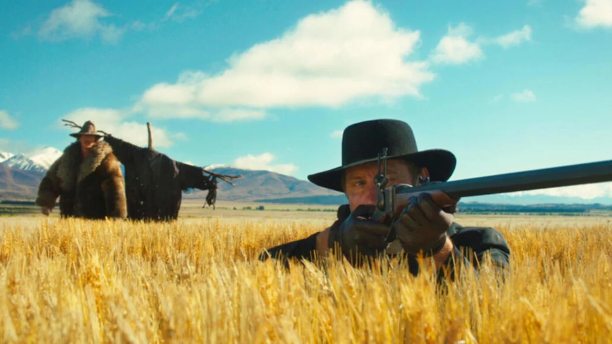

Kung Fu Panda 4 finalmente está chegando aos cinemas brasileiros. Após um hiato de quase 10
anos desde que o último filme da franquia foi lançado - Kung Fu Panda 3 - a sequência
acompanha as novas aventuras de Po, o Grande Dragão Guerreiro (no original, na voz de Jack
Black). uma teoria de fã surgiu despertando dúvidas entre aqueles que ainda esperam para
conferir Kung Fu Panda 4 nos cinemas: Afinal, Mestre Shifu pode morrer neste quarto filme da
franquia?
“Essa imagem captura a grandeza e a tristeza da partida do Mestre Shifu, deixando uma marca
indelével na história do kung fu"

Embora muitos digam que o bom faroeste está morto, o gênero atualmente conta com produções
de grande popularidade. A existência de universos como Yellowstone mostra que há,
definitivamente, uma demanda por histórias sobre cowboys, cavalos e terras. Há também um
western lançado há quase dez anos que quase ninguém conhece: Oeste sem Lei.
"Esta imagem retrata uma cena do curta slow west"
'Com Stranger Things, tenho colegas de elenco maravilhosos em quem posso confiar. E depois,
com Enola Holmes, posso contar com Henry Cavill ou Louis Partridge [...] Mas, com Donzela,
foi esta constatação: Meu Deus, sou só eu Tenho que estar lá todos os dias e tenho que me
entregar totalmente todos os dias'
“Esta imagem captura a essência do filme “Donzela”, retratando a intensidade da conversa entre os
personagens e o ambiente sombrio e misterioso. É uma representação visual eficaz do tema e do
ambiente do filme"
Direitos Reservados a Geek Info 2020-2024 ©